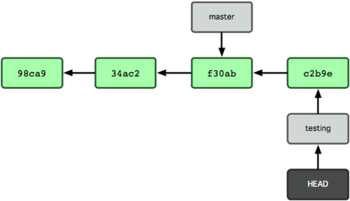

class: center, middle # .red[Version Control with Git Tutorial] ### by Ibrahim Umar (_ibrahim.umar (at) hi.no_) Part of Norway-US Workshop on Machine Learning to Improve Science for the Sustainability of Living Ocean Resources Institute of Marine Research (IMR) in Bergen, Norway, 24 April 2019 --- # .blue[Materials for this tutorial] ## This presentation: https://imr-wkml-2019.github.io/slides ## Workshop handbook: https://imr-wkml-2019.github.io/git-training Forked from Software Carpentry's excellent Git lesson (https://software-carpentry.org/lessons/). --- class: center, middle #.red[Automated Version Control (an Introduction)] What is version control and why should I use it? --- class: center, middle <img src="phd101212s.png" height=600> --- #.blue[Version Control (VC)] - 'UNDO': simplest form of VC - Imagine to have an unlimited 'UNDO' - That persist even after several years... - 'UNDO' that also allows many people to work in parallel - Without emailing back and forth - And can detect (and help to solve) conflicts --- #.blue[Why VC is required for researcher] .red[Imagine you:] - drafted an excellent paragraph for a paper, report, or manual, but later ruin it - How to go back to the 'excellent' version? - have 5 co-authors, how to manage the changes and comments? - Word 'Track changes'? -- What happen if you accept someone else's changes? - Can you track down who wrote what on a particular day? - If you are experimenting, which program version was used to generate a particular set of results? --- #.blue[VC basic facts] - A version control system (VCS): 1. Is a tool that keeps track of changes 2. helps us version and merge our files - Git is the most prominent VCS in the world - Github.com is the most popular online VCS around - Maybe your colleague(s) already in Github! - Easy, no need to set-up anything - Social and democratic model of collaborating * Anyone can join, comment, contributing piece of codes to others * Programmers don't need to sit alone in the dark corners anymore --- #.blue[VC (important) terms] - Changes that make up the next version is called .red[__commit__] * a useful metadata about them is also stored (e.g., commiter, message, timestamp, etc.) - complete history of commits for a particular project and their metadata make up a .red[__repository__] --- class: center, middle ### VC is the lab notebook of the digital world! Not just for software: books, papers, small data sets, and anything that changes over time or needs to be shared can and should be stored in a version control system. Read more here: https://imr-wkml-2019.github.io/git-training/01-basics/ --- class: center, middle #.red[Setting Up Git] How do I get set up to use Git? --- name: install # .blue[Install git] ## .red[Windows] Howto video: https://www.youtube.com/watch?v=339AEqk9c-8 1. Download the Git for Windows installer: https://git-for-windows.github.io/ 2. Run the installer and follow the steps bellow: 3. Click on "Next". 4. Click on "Next". 5. Keep "Use Git from the Windows Command Prompt" selected and click on "Next". 6. Click on "Next". 7. Keep "Checkout Windows-style, commit Unix-style line endings" selected and click on "Next". 8. Keep "Use Windows' default console window" selected and click on "Next". 9. Click on "Install". 10. Click on "Finish". --- ## .red[Windows (cont.)] If your "HOME" environment variable is not set (or you don't know what this is): - Open command prompt and type: ```bash setx HOME "%USERPROFILE%" ``` - This will provide you with both Git and Bash in the Git Bash program. ## .red[Mac OS and Linux] - Git is (usually) available by default --- name: install # .blue[Trouble installing Git?] You may use our cloud server instead: ```bash https://34.74.224.100/ ``` **Note**: Ignore and bypass the security warning when connecting to the above address. The connection is completely encrypted using https. Browsers think that this is unsafe simply because there is no domain name attached to the IP address. There are 10 user slots available: - Username: **`user1`**, **`user2`**, ..., **`user10`** - Password: **`WKML2019@IMR`** --- name: install # .blue[Check your git installation] .red[Try this:] 1. Open command line 2. At the command line, write: ```bash git config --list ``` ## .red[Configure git:] (only need to do this once) ```bash git config --global user.name "John Doe" git config --global user.email johndoe@example.com git config --global color.ui "auto" ``` See more: https://imr-wkml-2019.github.io/git-training/02-setup/ --- class: center, middle #.red[Creating a Repository] Where does Git store information? --- name: gitinit # .blue[Turn any (empty or populated) directory into a git repository] Hands-on: https://imr-wkml-2019.github.io/git-training/03-create/ --- name: clone-this-repo # .blue[Or start by cloning an existing repository:] For example, get these slides via: ```bash git clone https://github.com/imr-wkml-2019/slides.git cd slides ls -a # list files, including those "hidden" to see .git ``` The clone contains all the history! ```bash git log ``` prints all the commits and the commit messages, or: ```console git log --oneline # gives one-line summary of each commit ``` Then open `slides/index.html`<br> if you want to view this slides in your browser. --- # .blue[Updating cloned repository] To update your local copy of this slides to the latest revision: ```bash cd slides git pull ``` (more to this later...) --- class: center, middle #.red[Tracking Changes] How do I record changes in Git? How do I check the status of my version control repository? How do I record notes about what changes I made and why? --- # .blue[Your first changes:] Hands-on: https://imr-wkml-2019.github.io/git-training/04-changes/ ## OR... you can try to modify the local copy of this slides in your computer --- # .blue[Where are my changes?] - Now that we've made some changes, where can we see it? - Hands-on: https://imr-wkml-2019.github.io/git-training/04-changes/#where-are-my-changes --- # .blue[Git commit hash codes] Every time you do a `git commit` you create a new snapshot of the state of all tracked files. Each commit has a "name" that is a unique 40-character hexadecimal string. #### .blue[Example:] Scrolling through `git log` to the beginning shows the first 2 commits: ```bash commit cd708fe3ac120bce26c9d04e43900f685f4c9c33 Author: Ibrahim Umar <ibrahim.umar@imr.no> Date: Wed May 3 12:19:31 2017 +0200 Add license commit d31d0f3d83685dc47b2b3b856836560f2b9256a9 Author: Ibrahim Umar <ibrahim.umar@imr.no> Date: Wed May 3 12:14:33 2017 +0200 Add readme.md ``` The first 7 characters is usually enough to identify a commit, e.g. `d31d0f3`. --- # .blue[Staging in Git] <img src="git-stage.png" width=600> [Figure from https://git-scm.com/about/staging-area] Hands-on: https://imr-wkml-2019.github.io/git-training/04-changes/#staging-area --- class: center, middle #.red[Exploring History] How can I identify old versions of files? How do I review my changes? How can I recover old versions of files? --- # .blue[Identifiers in Git] - HEAD refers to the commit that is currently checked out - Usually at the tip of a branch - Otherwise HEAD is "detached" - HEAD~1 is one revision behind HEAD, HEAD~2 is two revisions behind, and so on... --- # .blue[Moving back in time] ## .blue[Git checkout] ```bash $ git checkout 02eba60 ``` See: https://git-scm.com/book/en/v1/Git-Branching-What-a-Branch-Is --- ## .blue[Git diff] Compare files between two different snapshots, e.g. ```bash git diff --stat d31d0f3 master # show which files changed git diff d31d0f3 master -- README.md # show diff in particular file ``` If you have made changes to a file but not committed the changes, then you can see the difference in file from the snapshot HEAD via ```bash git diff README.md ``` Hands-on: https://imr-wkml-2019.github.io/git-training/05-history/ --- # .blue[Review] We assume you: - have Git installed - are comfortable with basic git commands, e.g. - `init, add, commit, status, log, checkout, diff` ### .blue[For some tips and references, see:] - [Git Cheat Sheet](https://education.github.com/git-cheat-sheet-education.pdf) from https://education.github.com ### .blue[Other useful tools] - [atom](https://atom.io/) Atom editor developed by Github --- class: center, middle #.red[Ignoring Things] How can I tell Git to ignore files I don't want to track? Hands-on: https://imr-wkml-2019.github.io/git-training/06-ignore/ --- class: center, middle #.red[Remotes in GitHub] How do I share my changes with others on the web? --- # .blue[Use Github!] - Register yourself in github.com - Proceed to hands-on: https://imr-wkml-2019.github.io/git-training/07-github/ - (optional) If you wanted to use SSH, create an SSH key for your computer: https://help.github.com/articles/generating-ssh-keys --- class: center, middle #.red[Collaborating] How can I use version control to collaborate with other people? --- # .blue[Practicing By Yourself] - Pretend to be both an owner and a collaborator - Follow the hands-on: https://imr-wkml-2019.github.io/git-training/08-collab/ --- # .blue[A Basic Collaborative Workflow] After a `git clone`: 1. update your local repo with `git pull origin master` 2. make your changes and stage them with `git add` 3. commit your changes with `git commit -m` 4. upload the changes to GitHub with `git push origin master` --- class: center, middle #.red[Conflicts] What do I do when my changes conflict with someone else's? --- # .blue[Let's create and resolve conflict] - Conflicts: two or more people change the same file(s) at the same time - At exactly the same location(s) - VCS won't allow blind overwriting - Highlights conflicts to be manually resolved - Very safe! - Hands-on: https://imr-wkml-2019.github.io/git-training/09-conflict/ --- class: center, middle #.red[Open Science] How can version control help me make my work more open? #.red[Licensing] What licensing information should I include with my work? #.red[Citation] How can I make my work easier to cite? #.red[Hosting] Where should I host my version control repositories? --- class: center, middle #.red[Using Git from RStudio] How can I use Git with RStudio? --- #.blue[Git + RStudio] - It's easy with point-and-click! - Hands-on here: https://imr-wkml-2019.github.io/git-training/14-supplemental-rstudio/ --- class: center, middle #.red[More advanced Git...] Branching **Github** Pull requests **Github** Continuous Integration (CI) **Github** Continuous Deployment (CD) --- # .blue[Branching] Branches allow you to work on multiple indpendent modifications simultaneously. A branch could be used for: - Adding a new feature - Fixing a bug - Trying out changes that you may not want to make permanent You can easily and instantly switch between branches to work with different sets of changes or choose which changes to keep permanently. [Figures from https://git-scm.com/book/en/v1/Git-Branching-What-a-Branch-Is] --- ## .blue[Branching: Creating a branch] ```bash git branch testing ``` <img src="branching2.png"> --- ## .blue[Branching: Checkout (or switching to) a branch] ```bash git checkout testing ``` <img src="branching3.png"> --- ## .blue[Branching: Modify a branch] ```bash vim test.py git add test.py git commit -m 'add a test' ```  --- ## .blue[Branching: Checkout different branch] ```bash git checkout master ``` <img src="branching5.png"> --- ## .blue[Branching: Modify the different branch] ```bash vim README.md git add README.md git commit -m 'update README' ``` <img src="branching6.png"> --- ## .blue[Branching: More experiments] ### .red[Try this:] ```bash git checkout -b new-feature ``` - Modify `README.md` - Add a new file `file1.txt` - Commit changes - `git log` <br> - `git checkout master` - `git log` - Add a new file `file2.txt` - Commit changes <br> - `git checkout new-feature` - `git ls-files` --- # .blue[Workflow models] - Open source projects often requiring forking, pull requests - Managing branches for releases, development, bug fixes, - See e.g. https://git-scm.com/docs/gitworkflows ## Open source projects on GitHub: - Some sample repositories: [linux](https://github.com/torvalds/linux), [shablona](https://github.com/uwescience/shablona), [knitr](https://github.com/yihui/knitr) - "Organizations" with several repositories: [IPython](https://github.com/ipython), [Jupyter](https://github.com/jupyter), [Clawpack](https://github.com/clawpack) Explore the repositories, pull requests, issues, wiki, etc. --- # .blue[Contributing to a project on Github] We will use a temporary repository to play around with: ### .blue[View online:] https://github.com/imr-wkml-2019/python-keras-pkg ## .red[Fork this project:] Assuming you have a Github account, log in, navigate to the site above, and then click the "Fork" button at the top right. This takes you to a clone of the repository on your own Github account: ```bash https://github.com/<your Github username>/python-keras-pkg ``` --- ## .blue[Pull request: Creating a pull request] - Clone the forked repository: ```bash git clone https://github.com/<your Github username>/python-keras-pkg.git cd python-keras-pkg ``` - Modify `README.md` - Add and commit this change ```bash git push origin master ``` - In github.com, click on the "New pull request" button - Type your title and reason for the pull request and send it - Wait until you receive replies from the maintainer --- # .blue[Continuous Integration (CI) and Continuous Deployment (CD)] - Continuous Integration: Periodically integrating code changes into a shared repository - Every incoming code changes are automatically **built** and **tested** - Bugs and errors are caught earlier - Continuous Deployment: Periodically releases software (binaries, packages, etc.) incorporating the latest changes - Changes that were successfully built and tested in the CI phase is automatically released - Make it easier to provide multi-platform binaries and/or incorporate computationally heavy and time consuming pre-processing steps --- # .blue[Continuous Integration (CI) and Continuous Deployment (CD) (cont.)] - CI/CD tools: - Travis CI (https://travis-ci.org, supports Linux, MacOS, and Windows (unstable) environments) - Appveyor (https://ci.appveyor.com/, supports Linux and Windows environments) Make sure you have register your Github account with both providers ! --- ## .blue[CI/CD: An example] Remember https://github.com/imr-wkml-2019/python-keras-pkg ? - A Python package using Keras Tensorflow - When installed from source, a Keras model training and compilation is executed (using the Fashion MNIST: https://github.com/zalandoresearch/fashion-mnist) - The package classify modules can then called from Python - Python unit tests are included, among them are classifying two images from `/samples` directory Feel free to inspect the sources... --- ## .blue[CI/CD: An example (cont.)] - .red[Now imagine]: What if there are several people that are collaborating in improving this package (i.e., by pull requests or direct commits) - To make my life (and yours) easier, I now have a wish: - I want every commits and pull requests are tested against the included unit tests - If all unit tests are passed, make multi-platform Python wheels (https://pythonwheels.com) for the package with the latest changes available for download by anyone --- ## .blue[CI/CD: An example (cont.)] Steps (follow the demonstration...): 1. Fork https://github.com/imr-wkml-2019/python-keras-pkg on Github (in case you haven't done it) --- ## .blue[CI/CD: An example (cont.)] 2.Go and login into Appveyor (https://ci.appveyor.com/login), Select add repository and add the repository <div> <center>⇓</center> </div> --- --- ## .blue[CI/CD: An example (cont.)] 3.Go and login into Travis CI (https://travis-ci.org/), Click the plus button on the right side of "My Repositories" text and add the project <div> <center>⇓</center> </div> --- --- ## .blue[CI/CD: An example (cont.)] 4.Take a look at the recipes for the CI/CD services * Appveyor: `appveyor.yml` file * Travis: `.travis.yml` file Don't worry, you don't need to understand these files' contents right now! It's pre-configured and ready to be used. You only need to update the *"deployment key"*. --- ## .blue[CI/CD: An example (cont.)] 5.Create a deployment key * In Github: - Go to Settings > Developer Settings > Personal Access Tokens > Generate new token - Add name - Check ONLY "public_repo" - Press "Generate token" - **IMPORTANT** (Note down the key somewhere safe because we need it for both Travis and Appveyor) * In Travis: - Go to https://travis-ci.org/(github_username)/(github_repo)/settings - Add under "Environment variable" a new token with a name TOKEN (this is what we use in the `.travis.yml` and `appveyor.yml`) with the generated key as the value * In Appveyor: - Go to https://ci.appveyor.com/tools/encrypt - Put the generated key there and press encrypt - Copy paste into `appveyor.yml` (in the auth_token > secure: value) --- ## .blue[CI/CD: An example (cont.)] 6.Now try to make a changes, commit it and make a push - Note that after every push, Appveyor and Travis are running the unit tests with the latest source - Even cooler, all pull requests are tested as well BEFORE they are even merged! - Congratulations for your first CI implementation!!! --- ## .blue[CI/CD: An example (cont.)] 6.Check release - After both Travis and Appveyor have finished with the tests, click on the "releases" link in your repository page on Github (above "Clone or download" button) - We have now multi-platform binary wheels, together with pre-built model bundled inside the wheels! All ready to download and install. --- - Congratulations for your first CD implementation!!! --- class: center, middle #.red[Thank you !!!] Questions ??? <!-- ### End of slides ### -->